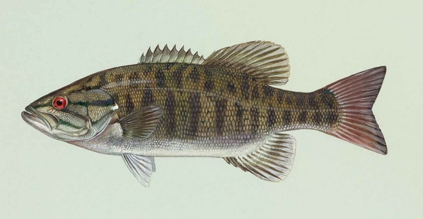
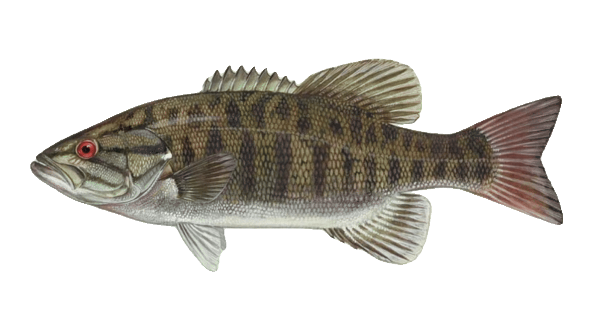

Micropterus dolomieu
Pound for pound, the smallmouth bass is the hardest-fighting freshwater fish in Quebec. It jumps, it runs, it bulldogs near the net — and it does all of this in some of the most scenic rocky water the Montreal region has to offer. The St. Lawrence River and its rocky tributaries are home to excellent smallmouth populations, yet the species is consistently underestimated by anglers focused on walleye or pike.
Species Overview
| Average Size (Montreal) | 30–50 cm, 0.7–2.5 kg |
| Quebec Record | 3.8 kg |
| Habitat | Rocky shorelines, river rapids, gravel points |
| Peak Season | June–September |
| Best Baits | Tubes, drop-shot, crayfish, small jigs, topwater |
| Top Local Spots | St. Lawrence River, Lac Saint-Louis rocky shores, Châteauguay River |
| Regulations | No minimum size in most zones; verify MFFP annually |
Habitat & Behaviour
Smallmouth bass are defined by their preference for hard, clean substrate. While largemouth relate to soft-bottom vegetation, smallmouth gravitate toward gravel, rock, and rubble. Current seams in rivers, rocky points on lakes, and rip-rap banks are all prime smallmouth habitat. They're sight feeders that prefer clearer water than largemouth, and they're highly competitive — a good piece of rocky structure will hold fish season after season.
Crayfish make up the majority of the diet in most Quebec systems, which explains why tube jigs and craw-pattern soft plastics are so consistently effective. In rivers, smallmouth also eat large quantities of minnows, darters, and aquatic insects. On the St. Lawrence, emerald shiners are a primary forage fish and matching that profile with a small swimbait or paddle-tail produces well.
Seasonal Breakdown
Spring — Pre-Spawn & Spawn (May – mid-June)
Smallmouth spawn slightly earlier than largemouth, typically when water hits 15°C to 18°C. Males build and guard bowl-shaped nests on gravel or sand in one to five feet of water. South-facing rocky shorelines warm fastest and hold the earliest spawning fish. Pre-spawn smallmouth stack on the first available rocky points near spawning flats and feed aggressively — these are often the biggest fish of the year. A tube jig or drop-shot with a finesse worm worked slowly along the transition from rock to gravel produces reliably.
Summer (late June – August)
Post-spawn fish scatter to main-lake rocky structure and river current seams. Depths of 12 to 25 feet over gravel or bedrock hold mid-day fish; they push shallow at dawn and dusk to feed on crayfish and minnows. Topwater fishing is outstanding in summer — poppers and walking baits worked along rocky points at dawn produce some of the most explosive strikes you'll experience. Mid-day, switch to a drop-shot or a tube jig fished on visible rocks and boulders.
Fall (September – October)
Fall is a prime season for big smallmouth. Cooling water triggers an extended feeding period, and fish become less structure-focused — moving out to open gravel flats, main lake points, and river confluence areas to chase baitfish. Swimbaits, finesse jerkbaits, and tube jigs in natural crayfish colours produce well. Fish feed all day, not just at low-light windows, making fall the most consistent season for numbers.

Top Presentations
Tube Jig
The tube jig is the definitive smallmouth lure. A 3.5 to 4-inch tube in green pumpkin, brown, or smoke rigged on a 3/16 to 3/8 oz internal jig head is the go-to presentation across all seasons. Work it along the bottom with short hops, mimicking a fleeing crayfish. In river current, let it swing and bounce naturally — smallmouth holding in current seams will crush it on the swing.
Drop-Shot
When smallmouth are finicky or highly pressured, the drop-shot rig excels. A 1/4 oz cylindrical weight on the tag end of the line, with a finesse worm or small swimbait on a hook positioned 12 to 18 inches above, presents the bait right at the fish's level. Shake gently in place and let the weight do the work. See our full drop-shot guide for detailed rigging instructions.
Topwater — Poppers & Walking Baits
Smallmouth are exceptional topwater targets. A Rebel Pop-R, Chug Bug, or Heddon Zara Spook in smaller sizes (2.5 to 3 inches) worked with sharp pops or a side-to-side walking action at dawn and dusk produces heart-stopping surface strikes. Rocky shorelines, current seams, and visible boulders at the surface are the prime targets.
Finesse Jerkbait
A small suspending jerkbait (Rapala Shadow Rap, Megabass Vision 110) worked with a twitch-pause cadence is a secret weapon for big river smallmouth in spring and fall. Use natural colours — shad, perch, or alewife patterns — and fish it on 8 to 10 lb fluorocarbon for maximum action.
"The smallmouth is everything the largemouth is — plus a fighting instinct that belongs in saltwater. Rocky shore, light tackle, and hold on."
Gear Setup
A 6.5 to 7-foot medium-light or medium spinning rod is the standard smallmouth setup. Pair it with a 2500 size reel spooled with 8 to 10 lb braided line and a 6 to 8 lb fluorocarbon leader. This combination gives you the sensitivity to feel subtle bites on a tube or drop-shot while still having enough backbone to move a 2 kg fish off rocky structure.
For topwater fishing, a slightly heavier medium action rod lets you work walking baits and poppers more effectively. If you're fishing heavy current on the St. Lawrence, increase jig head weight to 3/8 to 1/2 oz to stay in contact with the bottom.
Top Montreal Spots
The St. Lawrence River from the Lachine Rapids downstream through Lac Saint-Louis holds excellent smallmouth populations along its rocky shorelines. The Châteauguay River near its confluence is underrated and holds fish all summer. The rocky points and rip-rap of Lac Saint-Louis's western shore produce consistently from June onward. For a guided day trip, the Thousand Islands area of the upper St. Lawrence is world-class smallmouth water within a two-hour drive.

20+ years fishing Quebec's freshwater systems. Kayak angler, catch-and-release advocate, and founder of Sub Urban Anglers.
Read More About Me